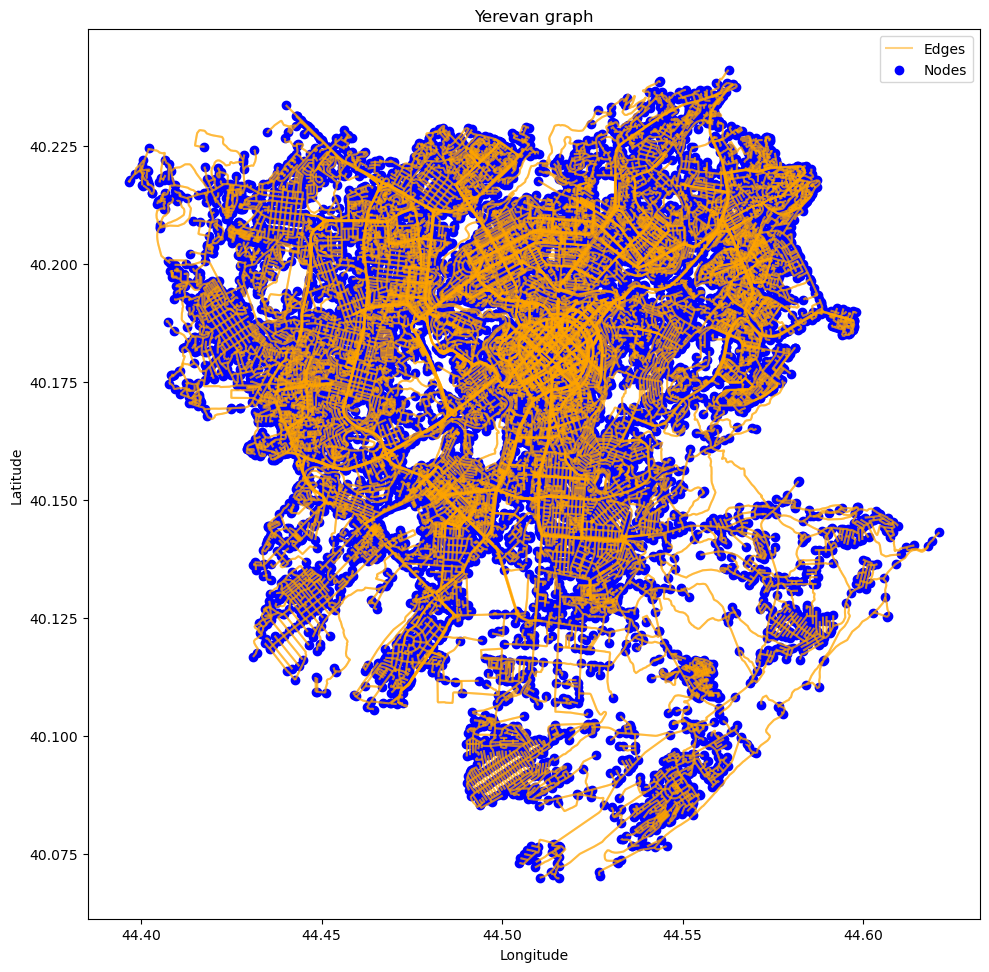
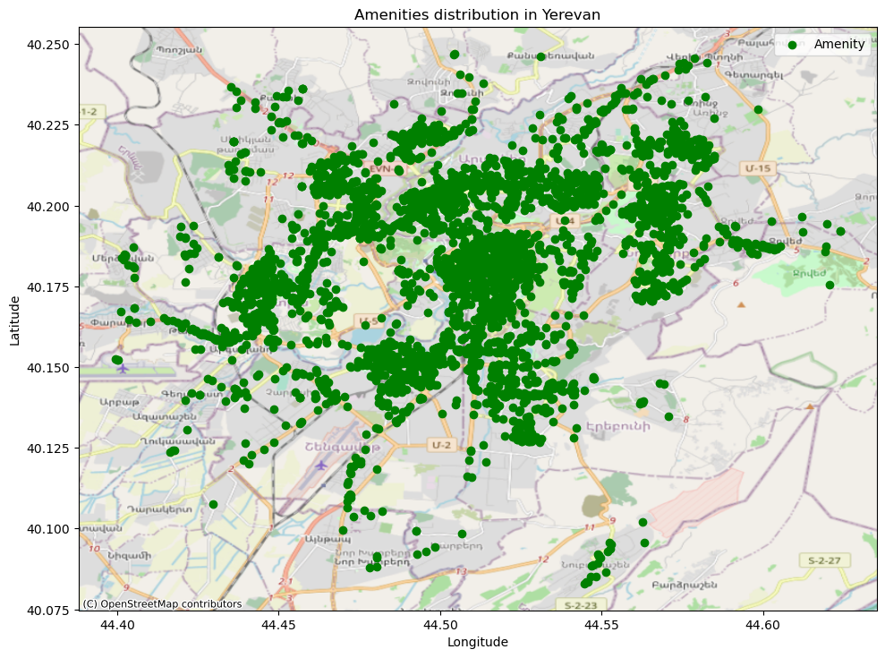
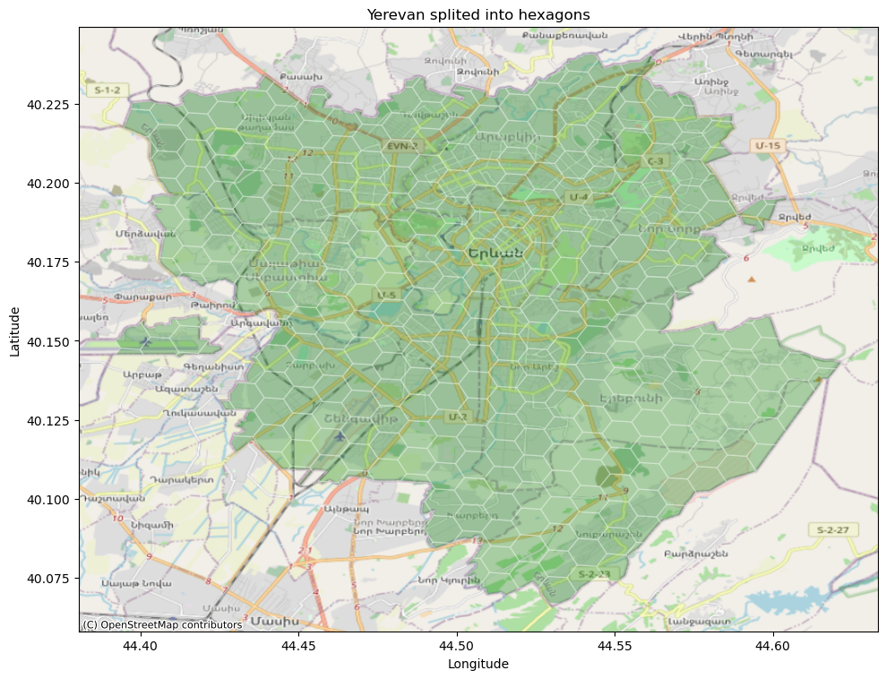
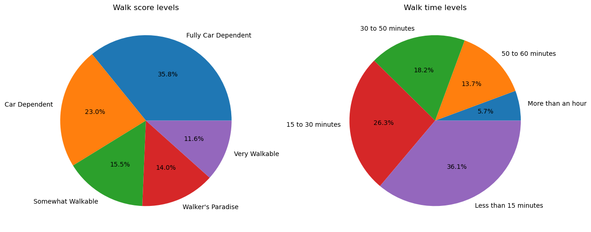
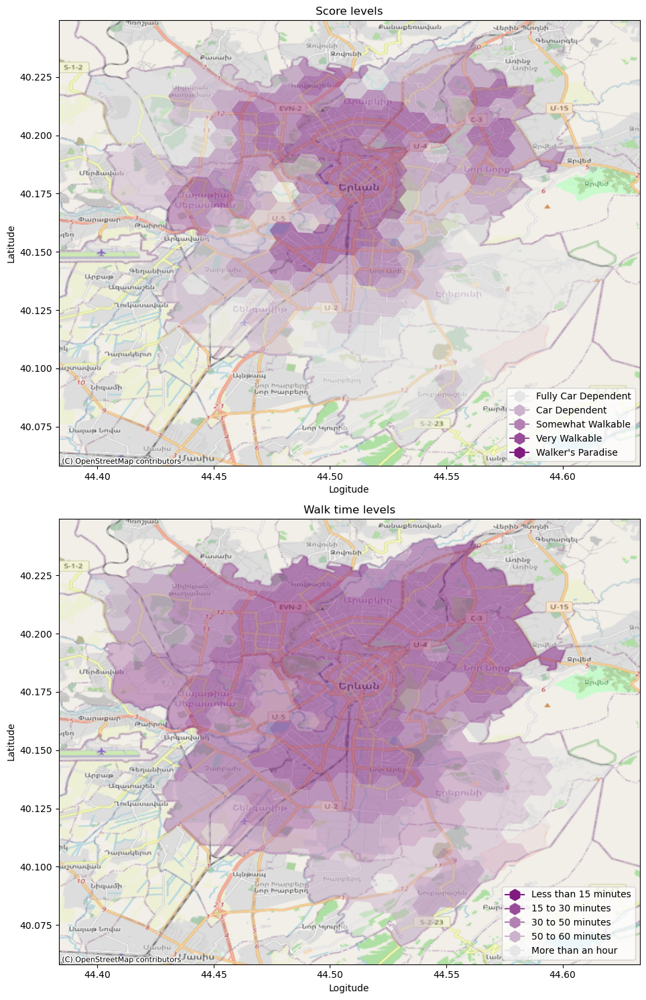
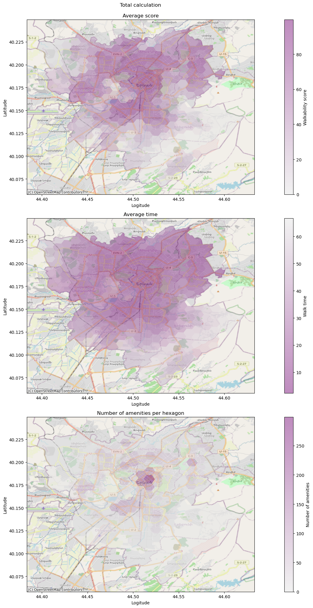

Data Collection
A walkability score is a number from 1 to 100, with 1 being the worst and 100 being the best. 0 to 24 means almost all errands need a car, 25 to 49 means most errands need a car, 50 to 69 means you can walk to some amenities, 70 to 89 shows you can do most things by walking, and 90 to 100 indicates you don’t need a car.
To calculate the walk score for given city, at first we need city map (nodes and edges) and necessary amenities in that city. Using Open Streep Map with python API osmnx, we can download graph for Yerevan, which is consists of nodes and edges, where nodes are the main data type of OpenStreetMap represented with Latitude and Longitude as a geograpical coordinates and unique ID within OpenStreeMap data nodes data base, and edges are way connecting nodes together.
yerevan = 'Yerevan, Armenia' # which place we want
network_type='walk' # we need ways for walk
# coordinate reference system number for armenia
# crs = 2590
crs = 4326
geo_crs = "EPSG:"+str(crs)
graph = ox.graph_from_place(yerevan,network_type=network_type)
graph = ox.project_graph(graph,crs)
# extract nodes and edges data frame from graph
nodes,edges = ox.graph_to_gdfs(graph)
The plot below is Yerevan visualized with nodes - painted blue - and edges connecting nodes - painted orange. The total number of nodes and edges are 29265 and 81548 respectively.
fig, ax = plt.subplots(1,1, figsize=(10,10))
plt.rcParams['figure.autolayout'] = True
edges.plot(ax=ax, color='orange', label='Edges',alpha=0.5)
nodes.plot(ax=ax, color='blue', label='Nodes')
ax.set_xlabel("Longitude")
ax.set_ylabel("Latitude")
plt.legend()
plt.title("Yerevan graph")
plt.show()

Nodes and edges we have. Now we need amenities, more clearely coordinates of amenities. I used two ways to get amenities. First one is simple: I used OpenStreetMap API to get amenities with speicifed tags for Yeravan, but that is not enough, since for Yerevan OSM provide only 2000 amenities, which is not actual number. So, that is why I tried to obtain more amenities and I used Google maps API for python.
List of tags from both OpenStreetMap and Goope map is wide (total 8617 poin in the map), but since I am using methodology from walkscore.com website, where for general case are chosen nine tags (grocery,resturants,shopping,coffee,banks,parks,schools,books,entertainment). I also chose them to be able compare my result with general cases, and in my total list of amenities, there are 5275 amenities that correspond to this list.
tags = {
'shop':[
'bakery',
'convenience',
'supermarket',
'mall',
'department_store',
'clothes',
'fashion',
'shoes',
'pharmacy',
'grocery'
],
'building':[
'hospital',
'school',
'kindergarten'
]
}
# all amenities from osmnx with their tags
def amenity_with_type(tags,crs,place):
amenityes_with_types = pd.DataFrame(columns=['Latitude','Longitude','Type'])
for key in tags:
for tag in tags[key]:
try:
amen = ox.features.features_from_place(place,tags={key:tag})
amen.to_crs(crs=crs,inplace=True)
centers = amen.centroid
inner_df = pd.DataFrame({'Latitude':centers.y.values,'Longitude':centers.x.values})
inner_df['Type'] = tag
amenityes_with_types = pd.concat([amenityes_with_types,inner_df])
except Exception as e:
print(str(e))
pass
return amenityes_with_types
# data from google
try:
full_amenity_df = pd.read_csv("../Data/full_amenity_list.csv")
except:
try:
amenities_with_type = pd.read_csv('../Data/amenities_with_type.csv')
except:
# donwload amenities
amenities = ox.features.features_from_place(yerevan,tags=tags)
# convert amenitiesy to the current CRS system
amenities.to_crs(crs=crs,inplace=True)
# print("Number of amentiies: ",len(amenities))
amenities_with_type = amenity_with_type(tags=tags,crs=crs,place=yerevan)
amenities_with_type.to_csv('../Data/amenities_with_type.csv',index=False)
google_data = pd.read_csv("../Data/amenities_from_google.csv")
full_amenity_df = pd.concat([amenities_with_type,google_data[['Latitude','Longitude','Type']]])
full_amenity_df.to_csv("../Data/full_amenity_list.csv",index=False)
grocery = ['convenience','supermarket','grocery','store','grocery_or_supermarket']
resturants = ['restaurant','bar']
shopping = ['mall','shoe_store','department_store','clothes', 'fashion',
'shoes','furniture_store','home_goods_store','clothing_store',
'electronics_store','jewelry_store','pet_store','book_store',
'shoe_store','hardware_store','bicycle_store']
coffee = ['bar','cafe']
banks = ['bank']
schools = ['school','secondary_school','primary_school']
parks = ['park']
books = ['book_store','library']
entertainment = ['amusement_park','art_gallery',]
amenities_from_article = {
"grocery": grocery,
"restaurants": resturants,
"shopping": shopping,
"coffee": coffee,
"banks": banks,
"parks": parks,
"schools": schools,
"books": books,
"entertainment": entertainment
}
amenity_weights = {
"grocery": [3],
"restaurants": [.75, .45, .25, .25, .225, .225, .225, .225, .2, .2],
"shopping": [.5, .45, .4, .35, .3],
"coffee": [1.25, .75],
"banks": [1],
"parks": [1],
"schools": [1],
"books": [1],
"entertainment": [1],
}
hospital = ['hospital','health','doctor','physiotherapist','dentist']
pharmacy = ['pharmacy','drugstore']
amenities_from_article_df = pd.DataFrame(columns=['Latitude', 'Longitude', 'Type','Category'])
for key in amenities_from_article:
df = full_amenity_df[full_amenity_df['Type'].isin(amenities_from_article[key])]
df.loc[:,"Category"] = key.capitalize()
amenities_from_article_df = pd.concat([amenities_from_article_df,df])
colors = ['red','blue','green','yellow','purple','orange','aqua','pink','brown']
colors = {cat:color for cat,color in zip(amenities_from_article_df['Category'].unique(),colors)}
fig, ax = plt.subplots(1,1,figsize=(10,10))
ax.scatter(x=amenities_from_article_df.Longitude,y=amenities_from_article_df.Latitude,
color='green',label='Amenity')
ax.set_xlabel("Longitude")
ax.set_ylabel("Latitude")
cx.add_basemap(ax,source=cx.providers.OpenStreetMap.Mapnik,crs=crs)
plt.legend()
plt.title("Amenities distribution in Yerevan")
plt.show()

The plot above shows more amenities in the city center and northern areas, which is obvois for Yerevan. The next step is splitting Yerevan into hexagonals, for which the final calculation will be done.
# extract x and y coordinates of nodes from node data frame
nodes_coordinates = nodes[['x','y']]
nodes_coordinates_gpdf = gpd.GeoDataFrame(nodes_coordinates,
geometry=gpd.points_from_xy(nodes_coordinates.x,
nodes_coordinates.y),
crs=geo_crs)
x_min,y_min,x_max,y_max = nodes_coordinates_gpdf.total_bounds
# fig, ax = plt.subplots(1,1,figsize=(10,10))
# nodes_coordinates_gpdf.plot(ax=ax,alpha=0.5,color='blue',label='Nodes')
# ax.scatter(x=x_min,y=y_min,color='red',label='South-West point',linewidth=5)
# ax.scatter(x=x_max,y=y_max,color='orange',label='North-East point',linewidth=5)
# plt.legend()
# plt.title("Yerevan nodes & two boundary points")
# plt.show()
# find rectangular bounds of Yereavn
# this function gets two boundary poonts and retusn rectangular are base on those points
yerevan_bounds = box(*nodes_coordinates_gpdf.total_bounds)
bounds_gdf = gpd.GeoDataFrame(index=[0],geometry=[yerevan_bounds],crs=geo_crs)
resolution = 8
# the next step is to split bounds into hexagonals
yerevan_hex = bounds_gdf.h3.polyfill_resample(resolution)
# fig, ax = plt.subplots(1,1,figsize=(10,10))
# yerevan_hex.plot(ax=ax,alpha=0.5,edgecolor='white')
# cx.add_basemap(ax=ax,source=cx.providers.OpenStreetMap.Mapnik,crs=crs)
# plt.title("Yerevan map with hexagons")
# plt.show()
outline_network = ox.geocoder.geocode_to_gdf(yerevan)
# fig, ax = plt.subplots(1,1,figsize=(10,10))
# outline_network.plot(color='green',ax=ax)
# yerevan_hex.plot(ax=ax,alpha=0.3,edgecolor='white')
# plt.title("Outline of Yerevan")
# plt.show()
hexagons_clip = gpd.clip(yerevan_hex,outline_network)
fig, ax = plt.subplots(1,1,figsize=(10,10))
hexagons_clip.plot(ax=ax,color='green',alpha=0.3,edgecolor='white')
ax.set_xlabel("Longitude")
ax.set_ylabel("Latitude")
cx.add_basemap(ax=ax,source=cx.providers.OpenStreetMap.Mapnik,crs=crs)
plt.title("Yerevan splited into hexagons")
plt.show()

hexagons_gdf= gpd.GeoDataFrame(hexagons_clip,crs=crs)
hexagons_gdf['centroid'] = hexagons_clip.centroid
hexagons_gdf.drop('index',axis=1,inplace=True)
number_of_hexagons = len(hexagons_gdf)
# print(f"Number of hexagons: {number_of_hexagons}")
# fig,ax = plt.subplots(1,1,figsize=(10,10))
# hexagons_gdf.plot(ax=ax,alpha=0.5,edgecolor='white')
# ax.scatter(x=hexagons_gdf.centroid.x,y=hexagons_gdf.centroid.y)
speed = 4.5
meters_per_minute = speed * 1000 / 60
meters_per_minute
graph = ox.add_edge_speeds(graph)
graph = ox.add_edge_travel_times(graph)
nodes_up = ox.graph_to_gdfs(graph, edges=False)[['x', 'y']]
edges_up = ox.graph_to_gdfs(graph, nodes=False).reset_index()[['u', 'v', 'length']] # travel_time is the time needed to pass from current edge
# edge is a distance between nodes
edges_up['time'] = edges_up['length']/meters_per_minute
edges_up.rename(columns={'length':'distance'},inplace=True)
nodes_up['h3_polyfill'] = [h3.geo_to_h3(nodes_up['y'].values[i],nodes_up['x'].values[i],resolution) for i in range(len(nodes_up))]
# full_amenity_df.Type.unique()
# fig,ax = plt.subplots(1,1,figsize=(10,10))
# draft_df = full_amenity_df[full_amenity_df.Type.isin(['bar','cafe','doctor'])]
# ax.scatter(x=draft_df.Longitude,y=draft_df.Latitude, color=draft_df['Type'].map({'bar':'red','cafe':'green',
# 'doctor':'blue'}))
# cx.add_basemap(ax=ax,source=cx.providers.OpenStreetMap.Mapnik,crs=crs)
Distance Decay Function
The distance decay function determines what percentage of a full score a category will receive based on the distance between the address being examined, which we refer to as the origin, and an amenity’s location. We use a polynomial distance decay function that gives full score or near full score for amenities that are within .25 (402 meters) miles of the origin. After this, scores decrease with distance smoothly. At a distance of one mile, amenities receive only about 12% of the score they would have had if they were right next to the origin. After one mile, scores decrease less quickly with greater distance, until they reach 1.5 (2414 meter) miles, after which they do not count towards the final score. (Countinue from following article)
def meter_to_mile(meter):
return meter*0.000621371
def mile_to_meter(mile):
return mile*1609.34
def get_walk_score(distance,meters=True,
first_break_point_miles=0.25,
second_break_point_miles=1,
critical_distance_miles=1.5,
score_in_second_break_point=12,
max_score=100):
first_break_point = mile_to_meter(first_break_point_miles)
second_break_point = mile_to_meter(second_break_point_miles)
critical_distance = mile_to_meter(critical_distance_miles)
slope,b,score = None,None,None
if not meters: # if note meter, mile
distance = mile_to_meter(distance)
print(distance)
if distance <= first_break_point:
score = 100
elif distance <= second_break_point:
slope = (max_score-score_in_second_break_point)/(first_break_point-second_break_point)
b = max_score - first_break_point * slope
elif distance <= critical_distance:
slope = score_in_second_break_point/(second_break_point-critical_distance)
b = score_in_second_break_point - second_break_point * slope
else:
score = 0
if score is None:
score = distance * slope + b
# elif
return score
def get_distances(amenities,tags,nodes,edges,resolution,edges_weight='distance',max_items=1,max_distance=5000,
amenities_imporatance_ratio=None,walk_speed=4.5,two_way=True,
distance_decay=False,amenities_weights=None,tag=None):
# walk_speed in km
meter_per_minute = walk_speed * 1000 / 60
try:
nodes_inner = nodes.reset_index()[['osmid','h3_polyfill']].copy()
except:
nodes_inner = nodes[['osmid','h3_polyfill']].copy()
pass
full_distances = nodes_inner[['osmid']].copy()
full_scores = nodes_inner[['osmid']].copy()
count_per_hexagon = nodes_inner[['h3_polyfill']].copy()
count_per_hexagon.drop_duplicates(inplace=True,keep='last')
n_instances= len(full_distances)
amenities_weight_list = []
total_weights = 0
for key in tags:
amenities_per_hex = nodes_inner[['osmid','h3_polyfill']].copy()
count_col_name = key+"_count"
if tag is not None:
key = tag
count_col_name = 'total_count'
if distance_decay:
amenities_weight_list = amenities_weights[key]
max_items = len(amenities_weight_list)
total_weights += sum(amenities_weight_list)
inner_df = amenities[amenities['Type'].isin(tags[key])]
# network
network = pan.Network(
node_x=nodes['x'],
node_y=nodes['y'],
edge_from=edges['u'],
edge_to=edges['v'],
edge_weights=edges[[edges_weight]],
twoway=two_way)
# add amenities
network.set_pois(
category=key,
maxitems=max_items,
maxdist=max_distance,
x_col=inner_df['Longitude'],
y_col=inner_df['Latitude'])
# nearest poiss
distances = network.nearest_pois(
category=key,
distance=max_distance,
num_pois=max_items,
imp_name=edges_weight)
distances.columns = ["".join([key,"_",edges_weight,"_"+str(i)]) for i in distances.columns]
if key == 'coffee':
inner_df = inner_df[inner_df['Type']!='bar']
inner_df['h3_polyfill'] = [h3.geo_to_h3(inner_df['Latitude'].values[i],inner_df['Longitude'].values[i],resolution) for i in range(len(inner_df))]
# count per hex
count_per_hex = inner_df.groupby('h3_polyfill',as_index=False)['h3_polyfill'].agg({count_col_name:"count"})
count_per_hexagon = count_per_hexagon.merge(count_per_hex,on='h3_polyfill',how='left').fillna(0)
# print(count_per_hexagon)
if distance_decay:
colname = "".join([key,"_score"])
# score beteen 0-100
distances[colname] = [distances.iloc[i,:].apply(lambda x: get_walk_score(x[j])*amenities_weight_list[j] for j in range(max_items)).sum() for i in range(len(distances))]
score_df = distances.iloc[:,-1].to_frame().copy()
full_scores = full_scores.merge(score_df,on='osmid')
# calculate score then group or group then calculate
distances.drop(colname,axis=1,inplace=True)
time_cole = "".join([key,"_time"])
distances[time_cole] = [distances.iloc[i,:].apply(lambda x: (x[j]/meter_per_minute)*amenities_weight_list[j] for j in range(max_items)).sum() for i in range(len(distances))]
time_df = distances[[time_cole]].copy()
distances.drop(time_cole,axis=1,inplace=True)
full_distances = full_distances.merge(time_df,on='osmid')
# if key == 'restaurants':
# break
if tag is not None:
# count_per_hexagon['type']=key
break
count_per_hexagon = count_per_hexagon.set_index('h3_polyfill').sum(axis=1).reset_index().rename(columns={0:'total_count'})
full_distances = full_distances.merge(nodes_inner,on='osmid').drop('osmid',axis=1)
full_distances = full_distances.groupby('h3_polyfill',as_index=False).mean()
full_distances.set_index('h3_polyfill',inplace=True)
if distance_decay:
full_scores = full_scores.merge(nodes_inner,on='osmid').drop('osmid',axis=1)
full_scores = full_scores.groupby('h3_polyfill',as_index=False).mean()
full_scores.set_index('h3_polyfill',inplace=True)
full_scores = full_scores.sum(axis=1).reset_index().rename(columns={0:'average_score'})
full_scores['average_score'] = full_scores['average_score']/total_weights
# full_scores.reset_index(inplace=True)
# time
full_distances = full_distances.sum(axis=1).reset_index().rename(columns={0:'average_time'})
full_distances['average_time'] = full_distances['average_time']/total_weights
full_scores = full_scores.merge(full_distances,on='h3_polyfill')
# total
# if tag is None:
# count_per_hexagon['total_count'] = count_per_hexagon.set_index('h3_polyfill').sum(axis=1).values
full_scores = full_scores.merge(count_per_hexagon,on='h3_polyfill',how='left')
return full_scores
full_distances = full_distances.merge(count_per_hexagon,on='h3_polyfill',how='left')
return full_distances
# combine for each hexagon
# distances = distances.merge(nodes_inner[['osmid','h3_polyfill']],on='osmid')
# # group
# # distances = distances.groupby('h3_polyfill',as_index=False)[
def distances_per_tag(amenities,hexagond_gdf,nodes,edges,amenities_from_article,amenities_weights,resolution,distance_decay=True):
distances_dict = {}
for key in amenities_from_article:
inner_df = amenities[amenities['Type'].isin(amenities_from_article[key])]
distances = get_distances(inner_df,nodes=nodes_up,edges=edges_up,tag=key,tags=amenities_from_article,resolution=resolution,distance_decay=True,amenities_weights=amenity_weights)
distances = hexagond_gdf.merge(distances,on='h3_polyfill')
distances.set_index('h3_polyfill',inplace=True)
distances_dict[key] = distances
return distances_dict
# # total calcuation
try:
distance_decay_distances = pd.read_csv("../Data/score_time_per_hex.csv")
except:
distance_decay_distances = get_distances(full_amenity_df,amenities_from_article,nodes=nodes_up,edges_weight='distance',
edges=edges_up,distance_decay=True,amenities_weights=amenity_weights,resolution=resolution)
distance_decay_distances.to_csv("../Data/score_time_per_hex.csv",index=False)
hexagons_full = hexagons_gdf.merge(distance_decay_distances,on='h3_polyfill').set_index('h3_polyfill')
hexagons_full['center_lat'] = hexagons_full.centroid.y
hexagons_full['center_lon'] = hexagons_full.centroid.x
# calculation per category
try:
dist_per_tag = {}
path = '../Data/PerTag/'
if os.listdir(path):
for file in os.listdir(path):
key = file.split('.')[0]
df = pd.read_csv(os.path.join(path,file))
if df is None:
raise Exception("Exception")
df = hexagons_full[['geometry','centroid']].merge(df.drop(['geometry','centroid'],axis=1),on='h3_polyfill')
dist_per_tag[key] = df
else:
raise Exception("exception")
except Exception as e:
dist_per_tag = distances_per_tag(hexagond_gdf=hexagons_gdf,amenities_weights=amenity_weights,
edges=edges_up,nodes=nodes_up,amenities=full_amenity_df,
amenities_from_article=amenities_from_article,distance_decay=True,resolution=resolution)
for key in dist_per_tag:
dist_per_tag[key].to_csv("../Data/PerTag/"+key+".csv")
densest_hex = hexagons_full.sort_values("total_count").tail(1)
mintime_hex = hexagons_full.sort_values("average_time").head(1)
maxscore_hex = hexagons_full.sort_values("average_score").tail(1)
# three value for this hexagon are the best amont all data
the_best_hex = densest_hex.copy()
colors_list = [(0.5, 0.1, 0.5),
(0.6, 0.3, 0.6),
(0.7, 0.5, 0.7),
(0.8, 0.7, 0.8),
(0.9, 0.9, 0.9)]
reversed_colors = colors_list.copy()
reversed_colors.reverse()
green_cmap = mcolors.LinearSegmentedColormap.from_list('yerevan_colors',[(0,1,0),(1,1,1)])
red_map = mcolors.LinearSegmentedColormap.from_list('yerevan_colors',[(0.5,0,0),(1,1,1)])
purple_map = mcolors.LinearSegmentedColormap.from_list('yerevan_colors',[colors_list[0],colors_list[-1]])
reversed_red = red_map.reversed()
reversed_green = green_cmap.reversed()
reversed_purple = purple_map.reversed()
def plot_result(data_frame,title='Total calculation',alpha=0.5,hist=False):
print("\n")
fig, ax = plt.subplots(3,1)
# ax[2][1].set_visible(False)
score_ax = ax[0]
time_ax = ax[1]
density_ax = ax[2]
time_ax.set_ylabel("Latitude")
time_ax.set_xlabel("Logitude")
score_ax.set_ylabel("Latitude")
score_ax.set_xlabel("Logitude")
density_ax.set_ylabel("Latitude")
density_ax.set_xlabel("Logitude")
fig.set_figheight(20)
fig.set_figwidth(20)
# walkabiltys core
data_frame.plot('average_score',ax=score_ax,cmap=reversed_purple,alpha=alpha)
norm = mcolors.Normalize(vmin=data_frame['average_score'].min(), vmax=data_frame['average_score'].max())
sm = plt.cm.ScalarMappable(cmap=reversed_purple, norm=norm)
sm.set_array([])
bar = plt.colorbar(sm,ax=score_ax)
bar.set_alpha(alpha)
bar.draw_all()
bar.set_label("Walkability score")
# walk time
data_frame.plot('average_time',ax=time_ax,cmap=purple_map,alpha=alpha)
norm = mcolors.Normalize(vmin=data_frame['average_time'].min(), vmax=data_frame['average_time'].max())
sm = plt.cm.ScalarMappable(cmap=purple_map, norm=norm)
sm.set_array([])
bar = plt.colorbar(sm,ax=time_ax)
bar.set_alpha(alpha)
bar.draw_all()
bar.set_label("Walk time")
# amenity density
data_frame.plot('total_count',ax=density_ax,cmap=reversed_purple,alpha=alpha)
norm = mcolors.Normalize(vmin=data_frame['total_count'].min(), vmax=data_frame['total_count'].max())
sm = plt.cm.ScalarMappable(cmap=reversed_purple, norm=norm)
sm.set_array([])
bar = plt.colorbar(sm,ax=density_ax)
bar.set_alpha(alpha)
bar.draw_all()
bar.set_label("Number of amenities")
score_ax.set_title(title+"\n\nAverage score")
time_ax.set_title("Average time")
density_ax.set_title("Number of amenities per hexagon")
for ax in (score_ax,time_ax,density_ax):
cx.add_basemap(ax=ax,source=cx.providers.OpenStreetMap.Mapnik,crs=crs)
if hist:
fig,ax = plt.subplots(1,2)
data_frame.hist('average_time',ax=ax[0],grid=False)
data_frame.hist('average_score',ax=ax[1],grid=False)
ax[0].set_title("Average time distribution")
ax[1].set_title("Average score distribution")
fig.set_figheight(5)
fig.set_figwidth(10)
print("\n")
plt.show()
hexagons_full['score_layers'] = np.where(hexagons_full['average_score']<25,'Fully Car Dependent',
np.where(hexagons_full['average_score']<50,'Car Dependent',
np.where(hexagons_full['average_score']<70,'Somewhat Walkable',
np.where(hexagons_full['average_score']<80,'Very Walkable',"Walker's Paradise"))))
hexagons_full['time_layers'] = np.where(hexagons_full['average_time']<15,'Less than 15 minutes',
np.where(hexagons_full['average_time']<30,'15 to 30 minutes',
np.where(hexagons_full['average_time']<50,'30 to 50 minutes',
np.where(hexagons_full['average_time']<60,'50 to 60 minutes','More than an hour'))))
mean_score_for_yerevan = hexagons_full['average_score'].mean()
mean_time_for_yerevan = hexagons_full['average_time'].mean()
score_portion = hexagons_full.value_counts('score_layers',normalize=True).to_frame("score_portion").reset_index()
time_portion = hexagons_full.value_counts('time_layers',normalize=True).to_frame("time_portion").reset_index()
time_portion = time_portion.iloc[::-1]
# score_portion
more_hour = hexagons_full[hexagons_full['time_layers']=='More than an hour']
les_15_m = hexagons_full[hexagons_full['time_layers']=='Less than 15 minutes']
After calculations, we have the walkability score (0-100), average walking time, and density of amenities over Yerevan, where
- walkability score is a value between 0-100 with these levels
- 1-24 - Car-Dependent: almost all errands require a car
- 25-49 - Car-Dependent: most errands require a car
- 50-69 - Somewhat Walkable: some errands can be accomplished on foot
- 70-89 - Very Walkable: most errands can be accomplished on foot
- 90-100 - Walker’s Paradise: daily errands do not require a car (soure)
- walk time: the time required to walk to an amenity within a hexagon
- amenities amount: total number of amenities in a hexagon
All calculations have been done assuming the human normal speed is 4.5 km per hour. So, changing the speed will also change the entire image.
The below pie chart shows walkability score and walk time level distribution among hexagons.
fig, ax = plt.subplots(1,2,figsize=(13,13))
ax[0].pie(x=score_portion['score_portion'],
labels=score_portion['score_layers'],
autopct='%1.1f%%')
ax[0].set_title("Walk score levels")
ax[1].pie(x=time_portion['time_portion'],
labels=time_portion['time_layers'],
autopct='%1.1f%%')
ax[1].set_title("Walk time levels")
plt.show()

More than half of Yerevan has less than 50 walk score, but mean walkabitiy score is 41.
The two plots below show how these levels are distributed over Yerevan.
fig, ax = plt.subplots(2,1,figsize=(15,15))
score_ax,time_ax = ax
alpha = 0.5
levels = hexagons_full.sort_values('average_score')['score_layers'].unique()
colors = {level:color for level,color in zip(levels,reversed_colors)}
hexagons_full.plot('score_layers',color=hexagons_full['score_layers'].map(colors),ax=score_ax,alpha=alpha)
labels = [Line2D([0],[0],marker='h',color=c,markerfacecolor=c,label=l,markersize=12) for l,c in colors.items()]
score_ax.legend(handles=labels,loc='lower right')
score_ax.set_title("Score levels")
score_ax.set_ylabel("Latitude")
score_ax.set_xlabel("Logitude")
cx.add_basemap(ax=score_ax,source=cx.providers.OpenStreetMap.Mapnik,crs=crs)
levels = hexagons_full.sort_values('average_time')['time_layers'].unique()
colors = {level:color for level,color in zip(levels,colors_list)}
hexagons_full.plot('score_layers',color=hexagons_full['time_layers'].map(colors),ax=time_ax,alpha=alpha)
labels = [Line2D([0],[0],marker='h',color=c,markerfacecolor=c,label=l,markersize=12) for l,c in colors.items()]
time_ax.legend(handles=labels,loc='lower right')
time_ax.set_title("Walk time levels")
time_ax.set_ylabel("Latitude")
time_ax.set_xlabel("Logitude")
cx.add_basemap(ax=time_ax,source=cx.providers.OpenStreetMap.Mapnik,crs=crs)
plt.show()

The best place for walkers in Yerevan is the city center, and the most walkable areas are close to the center. The best result (for a single hexagon - 0.66 km square) is 99.7 with 2.36 minute walking time and 299 amenities around that area, which center is Tumanyan 17. So, the best place for pedestrians is Tumanyan 17 with its surroundings. The walkscore 99.7 is the same as the score calculated by walkscore.com for Yerevan (city center). The next three plots show how the values of two measures (walk score and walk time) and the number of amenities for each hexagon are distributed over Yerevan.
plot_result(hexagons_full)

# for key in dist_per_tag:
# df = dist_per_tag[key]
# plot_result(df,title=key.capitalize())
# print("\n")